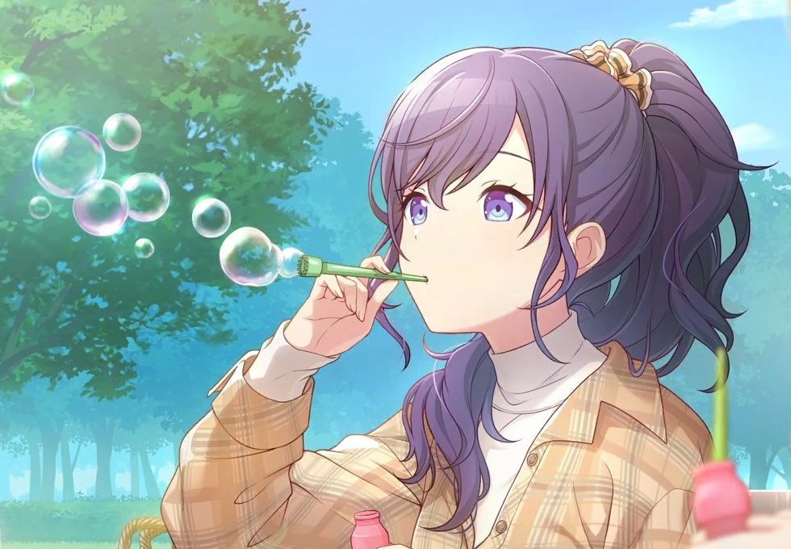
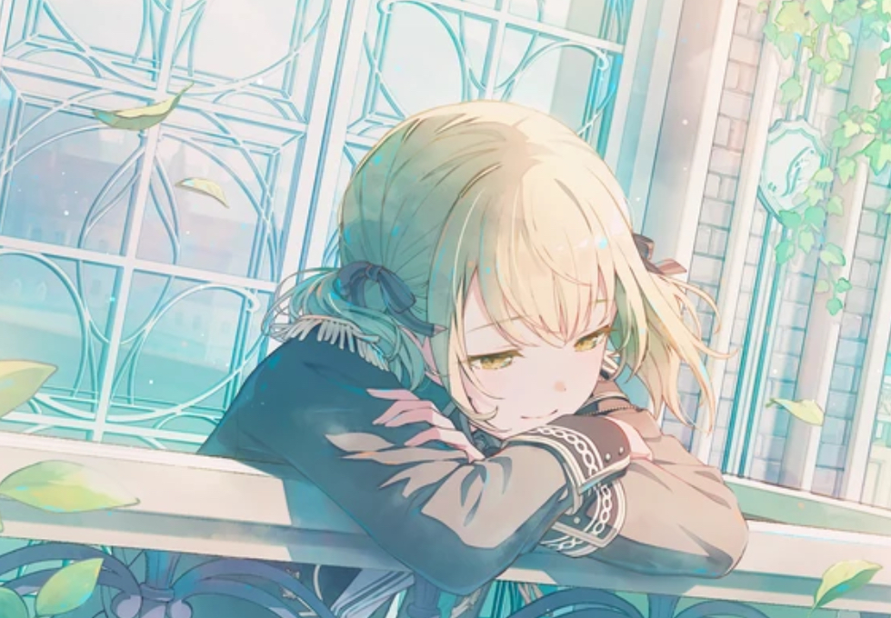
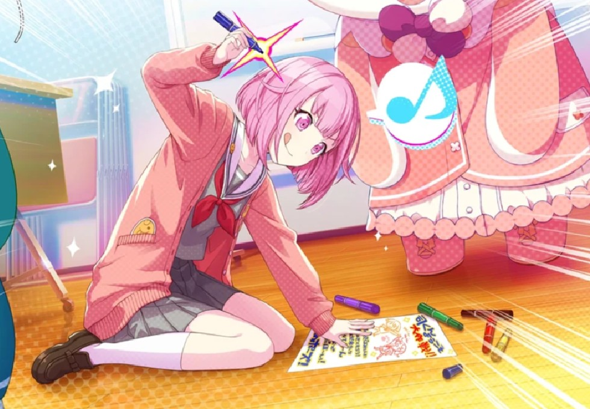
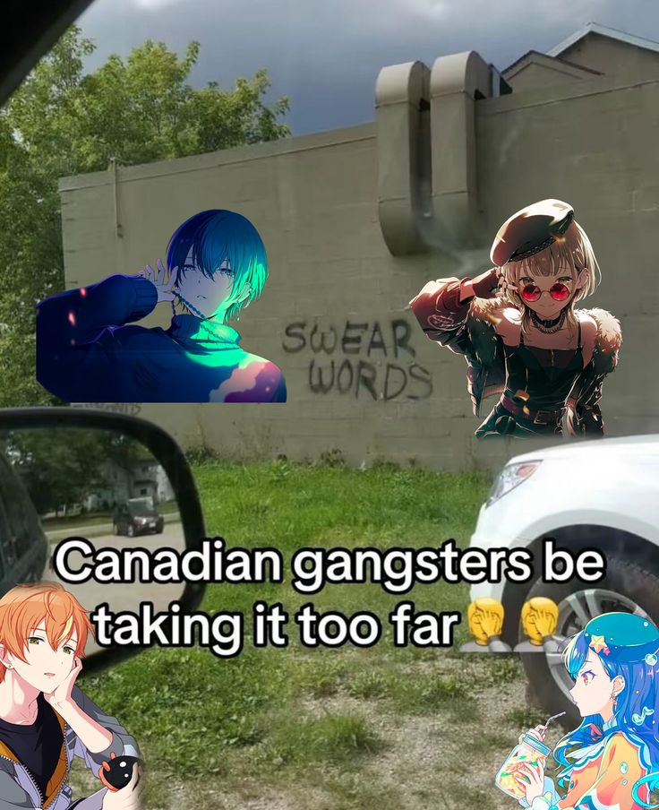
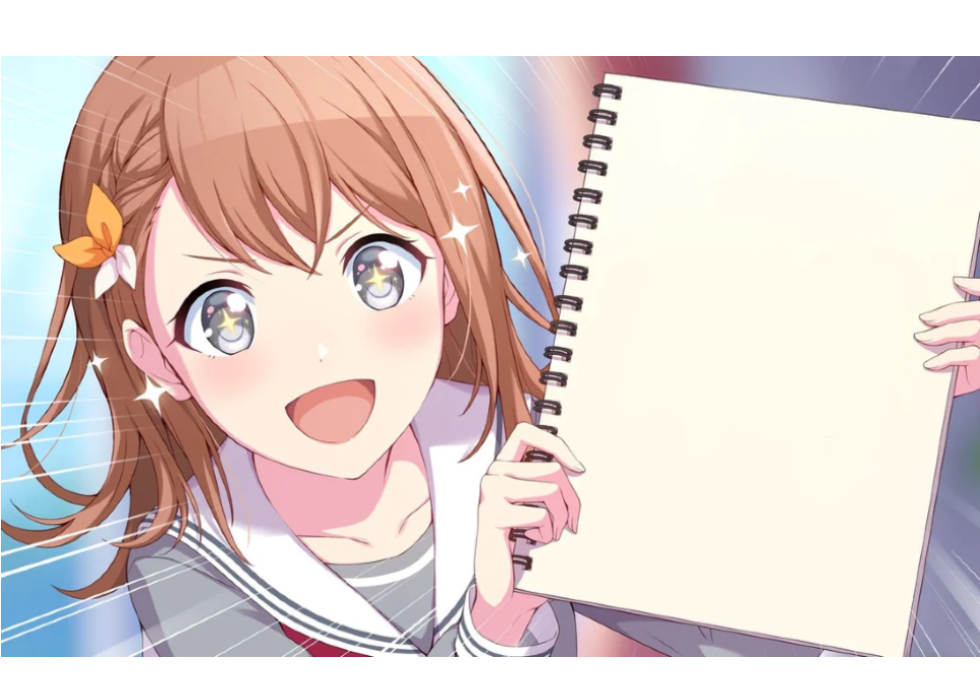

Local time:
turning 15 in
Listening to:
If it's empty, I'm currently not listening to anything. There is about a 4-5 second lag. This is not a link, sorry!

I'm a secondary 2 student in Singapore, and I lead BBSS Hack Club!
I mostly make websites and hardware projects. I am currently learning how to make games. In my free time, I like playing Colorful Stage or Project Sekai (though I'm a beginner at it) and READING IM A REALLY AVID READER TRUST ME!
I also occasionally make stuff (websites and hardware projects as mentioned before) when I feel like it! You can check them out at Stuff! theres not much though sorry, most of my work is permanently wip BUT you can expect more projects!! upcoming!! soon!!! im also learning japanese bc. um. idk really just for fun i guess!
That's all for my brief intro, there's more specific stuff up ahead which you can check out. Thanks for reading! (Don't forget to drop a ⭐️ in the github repo if you liked this site)
Wait... star...? You know who else is a star...? TENMA TSUK- ok ok im sorry
I'm a beginner. Like, a very very beginner beginner. I'm talking still trying to get full combos on hard, can't play on expert, you get the drift. literally the only song i can pass on expert is goodbye by circusp, i couldnt even manage yoka ni mitorete.. um..
My favourite unit(s) are Vivid BAD SQUAD, Wonderlands x Showtime, and Nightcord at 25:00! I love Leo/need and MORE MORE JUMP! too.
My favourite characters are:
Psst... if you want to add me as a friend on pjsk, my friend code is 618610423201304577!
i lost my acc tho 😢 rip enstars toya ily. my history w my pjsk accs is very tragic. i might revive that acc tho bc i love it

super super cool amazing cursor trail (worm which follows ur cursor)!! isnt that amazing??
i mentioned i liked reading earlier! here's soem of my favourite books/authors
books:
The Honest Truth (by Dan Gemeinhart)
Flowers for Algernon (Daniel Keyes)
PAX (Sara Pennypacker)
authors:
Lemony Snicket (fav books: A series of Unfortunate Events, Poison for Breakfast)
Ray Bradbury (A Sound of Thunder, Fahrenheit 451)
Charles Dickens (A Christmas Carol, Oliver Twist)
psst..
sometimes i feature a book or pjsk story i like in my magazine, you can go check it out!
petit sekai break
becuase sanika is super cool 😳😳
smoetimes, when im not coding or reading, i also liek to do a lot of other things! like...
baking
leanring japanese
image editing and making those photshoped images
listening to songs, obviously
and a lot more!
i dabble in writing occasionally
i liek playing badminton on occasion
i can also cook. does taht count in baking. or does baking count in cooking. waht
if you wanna know more, you can always contact me wherever! speaking of which... after the halftime show, you cna check out my contact info!



I check these places fairly often (expect maybe my emails bc it's a pain to log in to every one of them), but I respond fastest to WhatsApp messages and Slack DMs.
WhatsApp: +65 9619 7165
Slack
Discord: anxtoyareal, immisciblenightcord, pop1anzu (yes i have 3 accounts)
Email (for hack club stuff): sanika@bbsshack.club
Email (for any other thing): thesanikatiwari@gmail.com
That's all! bye, have a great day !! you can also check out the other pages from the navbar
← free meme template for you right there